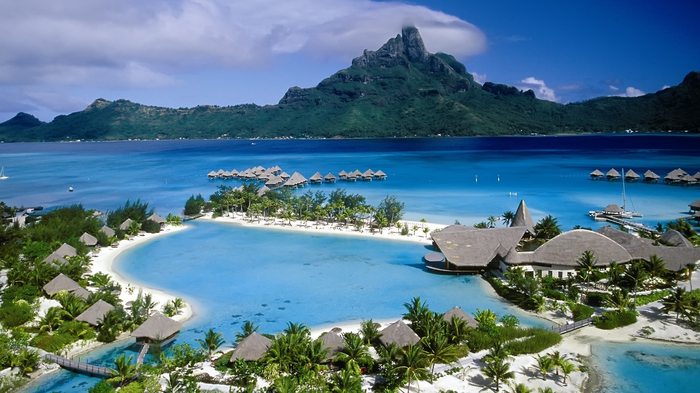

The predominantly mountainous region comprising the present-day Himachal Pradesh has been inhabited since pre-historic times having witnessed multiple waves of human migrations from other areas.[19] Through its history, the region was mostly ruled by local kingdoms some of which accepted the suzerainty of larger empires. Prior to India's independence from the British, Himachal comprised the hilly regions of Punjab Province of British India. After independence, many of the hilly territories were organized as the Chief Commissioner's province of Himachal Pradesh which later became a union territory. In 1966, hilly areas of neighboring Punjab state were merged into Himachal and it was ultimately granted full statehood in 1971.
Himachal Pradesh is spread across valleys with many perennial rivers flowing through them. Around 90% of the state's population lives in rural areas. Agriculture, horticulture, hydropower and tourism are important constituents of the state's economy. The hilly state is almost universally electrified with 99.5% of the households having electricity as of 2016. The state was declared India's second open-defecation-free state in 2016.[20] According to a survey of CMS India Corruption Study 2017, Himachal Pradesh is India's least.

The Chera dynasty was the first prominent kingdom based in Kerala.
The Ay kingdom in the deep south and the Ezhimala kingdom in the north formed
the other kingdoms
in the early years of the Common Era (CE). The region had been a prominent
spice exporter since 3000 BCE. The region's prominence in trade was noted in
the works of Pliny as well as the Periplus around 100
CE. In the 15th century, the spice trade attracted Portuguese
traders
to Kerala, and paved the way for European colonisation of India.
At the time of Indian independence movement in the early 20th
century,
Kasaragod District) in South Canara,
and the erstwhile state of Thiru-Ko spice exporter since 3000 BCE. The region's prominence in trade was noted in
the works of Pliny as well as the Periplus around 100
CE. In the 15th century, the spice trade attracted Portuguese
traders
to Kerala, and paved the way for European colonisation of India.
At the time of Indian independence movement in the early 20th
century,
Kasaragod District) in South Canara,
and the erstwhile state of Thiru-K
The Andaman Islands (ændəmən/) are an archipelago in the northeastern Indian Ocean about 130 km (81 mi) southwest off the coasts of Myanmar's Ayeyarwady Region. Together with the Nicobar Islands to their south, the Andamans serve as a maritime boundary between the Bay of Bengal to the west and the Andaman Sea to the east. Most of the islands are part of the Andaman and Nicobar Islands, a Union Territory of India, while the Coco Islands and Preparis Island are part of the Yangon Region of Myanmar.
The Andaman Islands are home to the Andamanese, a group of indigenous people that includes a number of tribes, including the Jarawa and Sentinelese.[1] While some of the islands can be visited with permits, entry to others, including North Sentinel Island, is banned by law. The Sentinelese are generally hostile to visitors and have had little contact with any other people. The government protects their right to privacy
The Andaman Islands are home to the Andamanese, a group of indigenous people that includes a number of tribes, including the Jarawa and Sentinelese.[1] While some of the islands can be visited with permits, entry to others, including North Sentinel Island, is banned by law. The Sentinelese are generally hostile to visitors and have had little contact with any other people. The government protects their right to privac.
The history of human settlement in the west Indian state of Rajasthan dates back to about 5,000 years ago. This region was inhabited during great floods after the ice age as well. This area was known as Matsya kingdom. It was the site of the Indus Valley Civilization. The early medieval period saw the rise of many Rajput kingdoms like Pratihars, Chauhans of Ajmer, Guhilot ( also known as Gohil ) and Sisodias of Mewar, Shekhawats of Shekhawati Sikar, Rathores of Marwar.
Location of Rajasthan
The Pratihar Empire acted as a barrier for Arab invaders from the 8th to the 11th century.it was the power of the Pratihara army that effectively barred the progress of the Arabs beyond the confines of Sindh, their only conquest for nearly 300 years.
After Matsya kingdom this area was known as Rajputana around the time when the Kachwaha migrated to the region.[1] The Kachwahas continued to assist their Rajput allies in many Fatal battles including First Battle of Tarain and later in the disastrous Second Battle of Tarain.[2] The last time where Kachwahas fought for Rajputs was under Rana Sanga of Chittor in the Battle of Khanwa.[3]
The word Kashmir is thought to have been derived from Sanskrit and was referred to as káśmīra.[9] A popular local etymology of Kashmira is that it is land desiccated from water.[10]
An alternative etymology derives the name from the name of the Vedic sage Kashyapa who is believed to have settled people in this land. Accordingly, Kashmir would be derived from either kashyapa-mir (Kashyapa's Lake) or kashyapa-meru (Kashyapa's Mountain).[10]
The word has been referenced to in a Hindu scripture mantra worshipping the Hindu goddess Sharada and is mentioned to have resided in the land of kashmira, or which might have been a reference to the Sharada Peeth.
The Ancient Greeks called the region Kasperia, which has been identified with Kaspapyros of Hecataeus of Miletus (apud Stephanus of Byzantium) and Kaspatyros of Herodotus (3.102, 4.44). Kashmir is also believed to be the country meant by Ptolemy's Kaspeiria.[11] The earliest text which directly mentions the name Kashmir is in Ashtadhyayi written by the Sanskrit grammarian Pāṇini during the 5th century BC. Pāṇini called the people of Kashmir Kashmirikas.[12][13][14] Some other early references to Kashmir can also be found in Mahabharata in Sabha Parva and in puranas like Matsya Purana, Vayu Purana, Padma Purana and Vishnu Purana and Vishnudharmottara Purana.